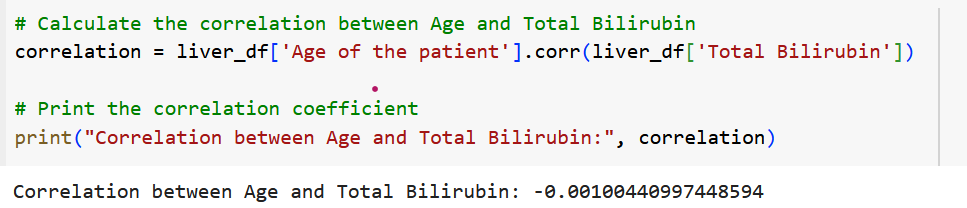
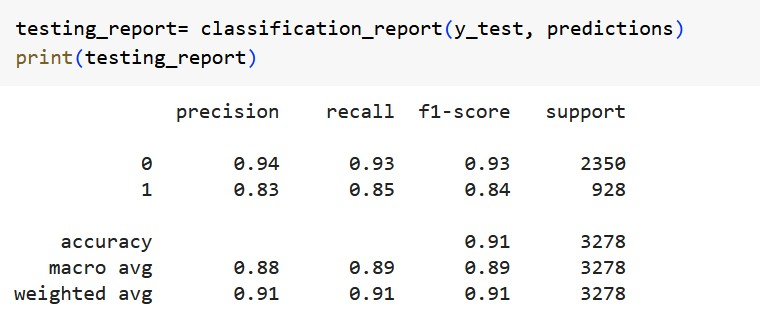
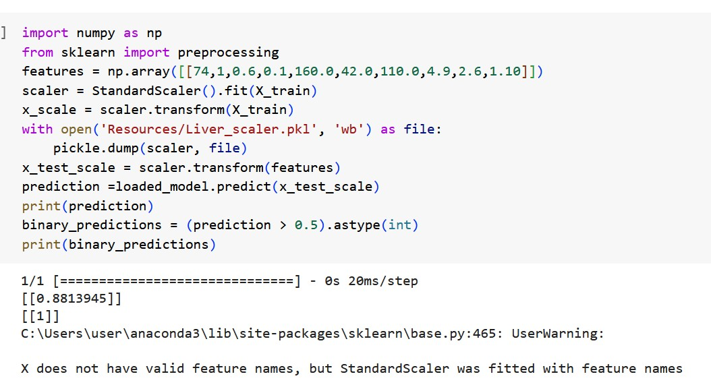

Liver disease
liver
disease prediction model using a liver dataset. It commences with meticulous
data exploration, addressing missing values, and encoding categorical features
for model readiness. Engaging visualizations offer insights into the data's
intricacies. A correlation heatmap highlights relationships between age and
bilirubin levels. The dataset is thoughtfully divided into training and testing
sets, followed by feature scaling for consistent data treatment. A neural
network model is crafted using Keres
standard scalar . Model performance is evaluated on the test set, emphasizing
its predictive accuracy. This project underscores the significance of data
preprocessing and neural network modeling for precise liver disease prediction.
https://www.kaggle.com/datasets/abhi8923shriv/liver-disease-patient-dataset
To
begin this exploratory analysis, first import libraries and define functions
for plotting the data using matplotlib. Depending on the data,
not all plots will be made.
Data Acquisition and Inspection:
o The project initiates data
acquisition, loading data from a liver dataset.
o It includes an initial
inspection of data, checking for missing values, and tail data exploration.
·
Data
Preprocessing and Encoding:
o Missing data is addressed,
and categorical variables like 'Gender of the patient' and 'Result' are one-hot
encoded for model readiness.
·
Insightful
Data Visualization:
o Visualizations provide
insights into data quality, featuring missing value visualizations and pie
charts for gender distribution.
o Histograms offer a deeper
understanding of feature distributions concerning liver disease outcomes.
·
Correlation
Analysis:
o A correlation heatmap
explores the relationship between age and total bilirubin levels, unveiling
potential connections.


·
Model
Development and Evaluation:
o
A
neural network model is created using keras standard scalar model.
o The model is compiled and
evaluated for its predictive accuracy on the test dataset.
